Personal Project
kala
An iOS app that saves colors and memories together.
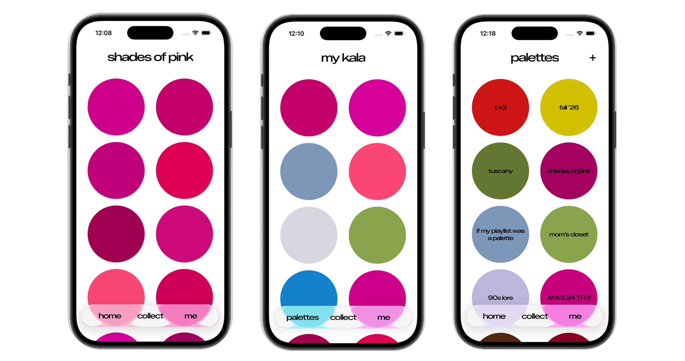
1. Background
As a designer, I wanted to experimentally learn the following, so I built an iOS app in Claude Code (Sonnet 4.6), based on a UI I designed myself in Figma.
- The process from app design → development
- The process and obstacles of vibe-coding with generative AI during app development
- How to translate a UI design into something implementable
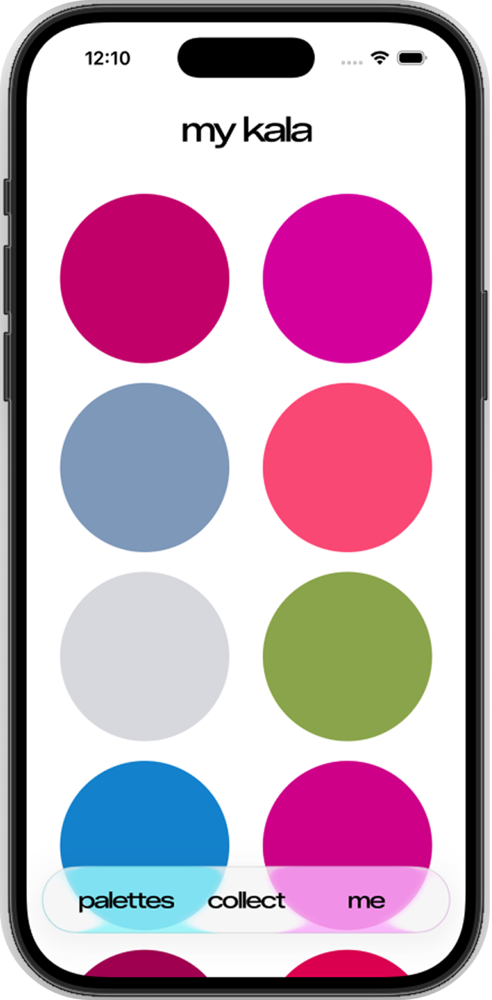
2. Inspiration
The purpose of this project was to learn the process of building an app with generative AI, so I decided to freely build something fun to make and use.
☁️ Theme: saving color and memory
- A colorful, large-dot patterned rug that's been in my parents' house for as long as I can remember.
- Brian Wildsmith's picture books, whose vivid use of color left a strong visual impression on me as a child.
- Memories that resurface through the association of specific colors.
Inspired by these, I designed an app that lets users save memories together with color.
The original references here were a rug pattern and two Brian Wildsmith illustrations. Since those are copyrighted, I've left them out of this page rather than reproduce them.
3. UI Details
1. Round swatches
Users can see the colors they've collected at a glance and visually enjoy how they combine. I used circles extensively to create a sense of unity.
2. Glass texture
To blend well with Apple's native iOS glass UI, I used the same glass treatment for the bottom nav bar and for motifs that appear throughout the interface.
3. Font
Fonts like Inter, Roboto, Playfair Display, and Cormorant Garamond are heavily used across software and generative-AI projects. To avoid that same uniform look, I wanted this app to have a signature feel of its own. So I chose a distinctive font and deliberately tightened the letter spacing to emphasize its character.
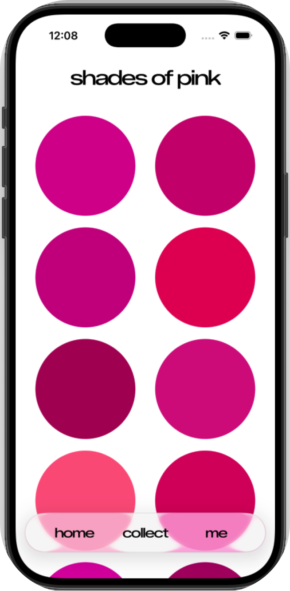
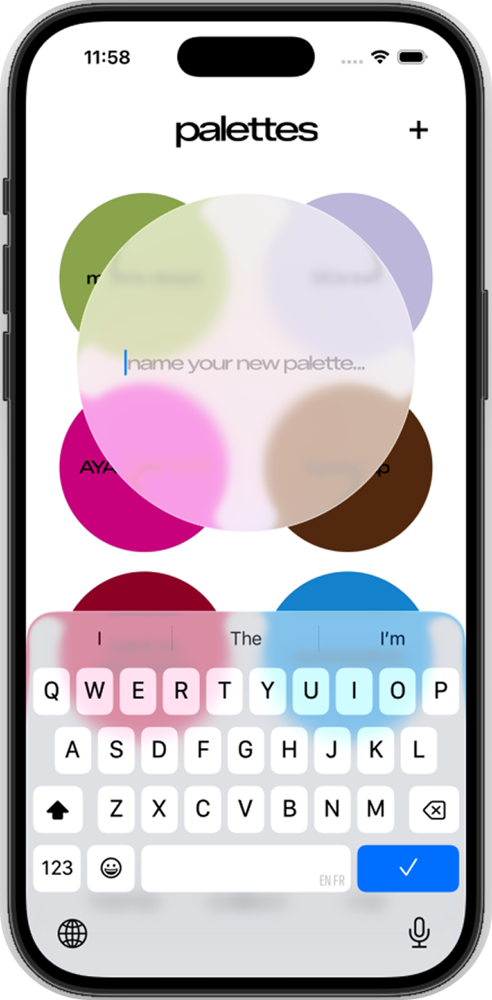
4. Features - a
Users can add new palettes or swatches from the "collect" button at the bottom of the screen, or the "+" button on the "palette" screen.
- First, the user picks a favorite photo from their phone's photo library. (left)
- Tap a favorite color on the photo. (center)
- A memo can be added in the field below the photo. (center)
- Tap "save" in the bottom right to save the memo and color. (right)
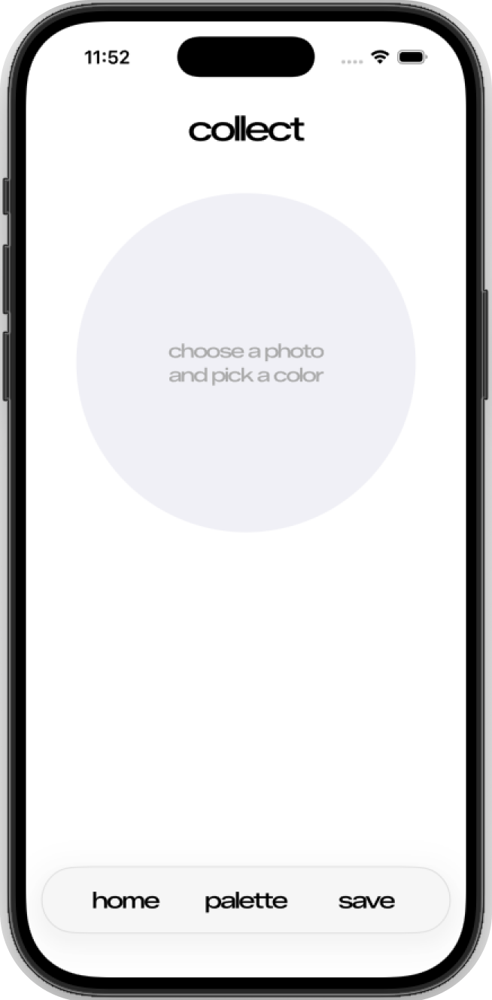
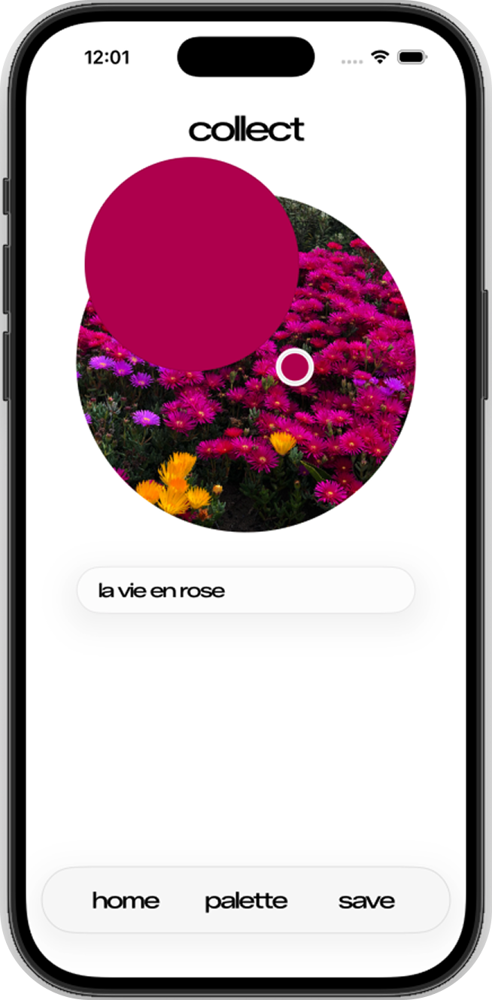
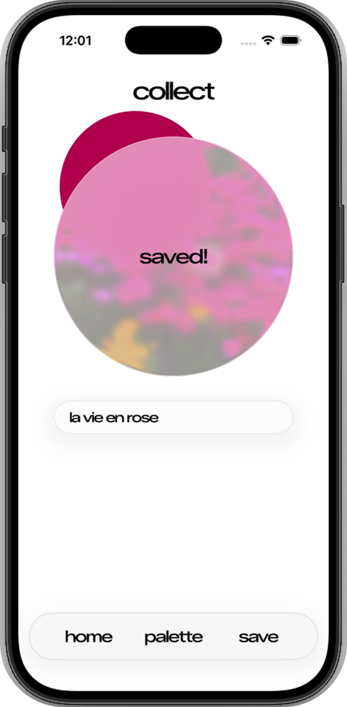
5. Features - b
Tapping a swatch on the palette shows the HEX code of the picked color along with any memo you added. Memos can be edited via "edit." (left)
Separately from collecting colors, users can also save standalone memos. Tapping "me" in the bottom nav opens a memo screen for jotting down ideas. (center, right)
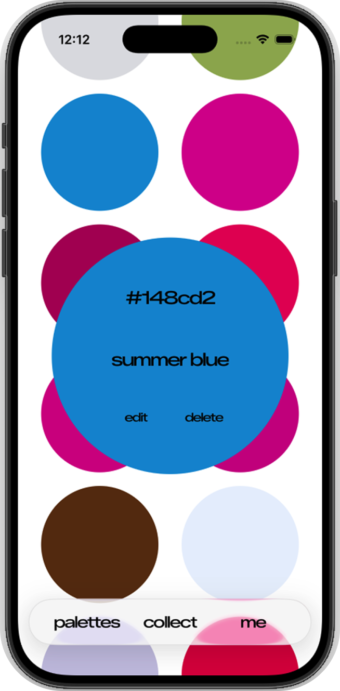
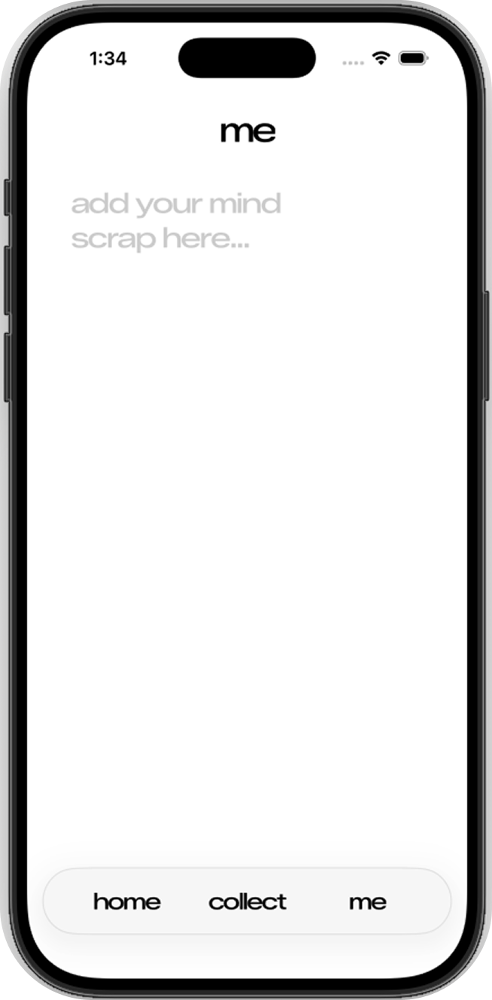
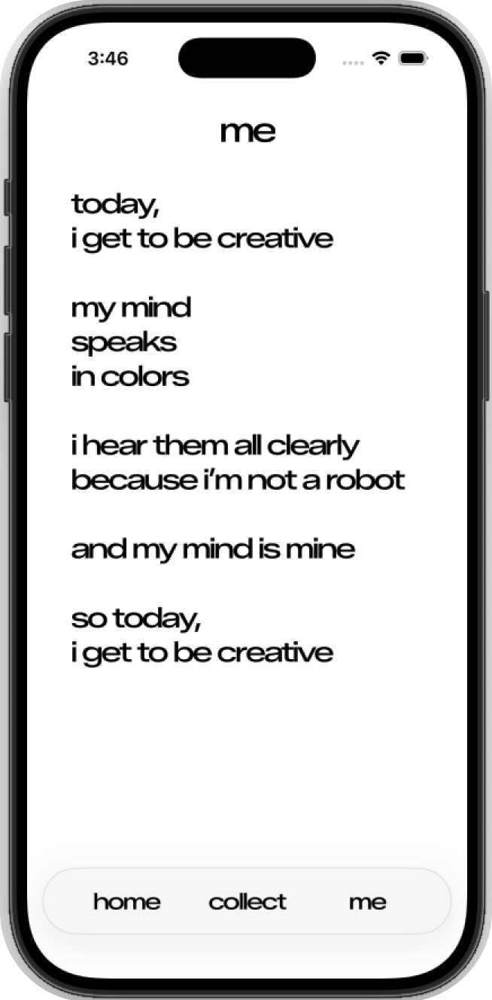
6. Challenges (1)
Translating the glass texture from Figma into the actual product
In the Figma prototype, I built the bottom nav bar and each button from a glass material, carefully tuning values like refraction, depth, dispersion, and frost.
But once I actually built it in the Xcode simulator, I found that this level of fine-tuning currently isn't technically possible due to Apple's constraints. I tried recreating the same design with highly transparent white and light gray instead — but it drifted far from the original prototype and no longer looked like glass.
So I adjusted the nav bar's glass texture to follow the look of iOS's native glass UI instead. Since I couldn't reproduce the original's layered glass-on-glass effect, I shrank the nav bar itself, as shown on the right, and removed the layering.
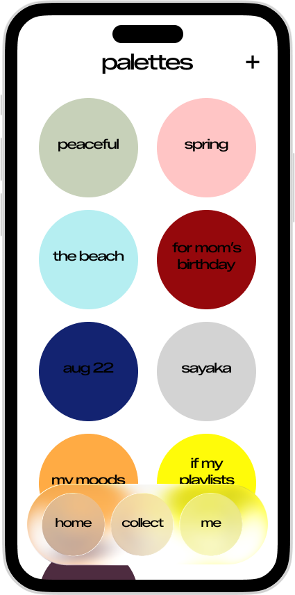
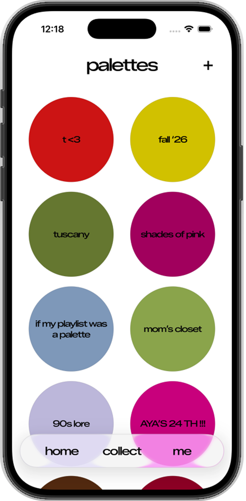
7. Challenges (2)
Claude Code didn't always follow the prompt exactly
I passed the UI data from Figma to Claude Code and simulated the product in the Simulator based on my prompts. Often, the result didn't match the Figma design exactly as prompted, and it took several attempts before it converged on — or came close to — the original design.
For example, even though the selected photo and the overlay element lined up perfectly in Figma, they didn't align in the Simulator, as shown on the left. Fixing this took the most time of anything in the project.
After around 10 rounds of prompting, I finally got the photo and overlay to line up, as shown on the right.
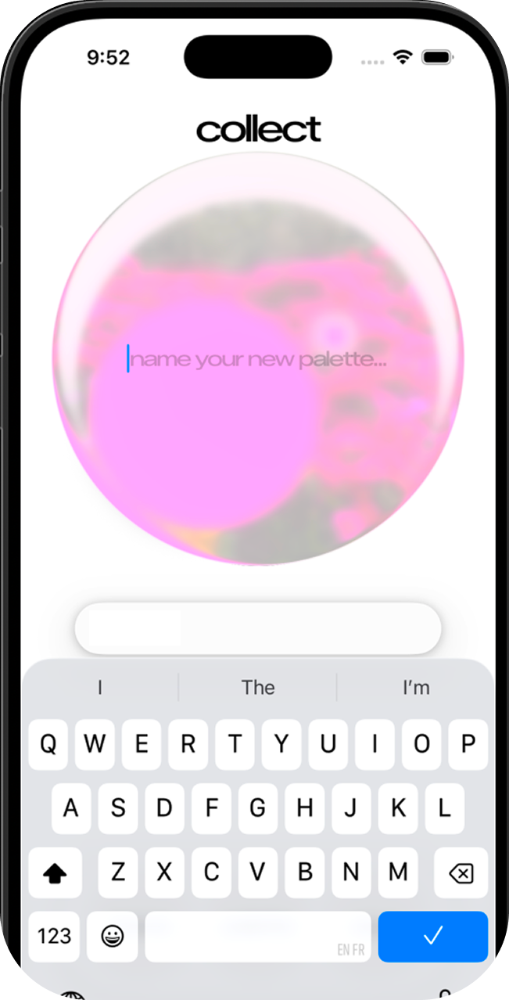
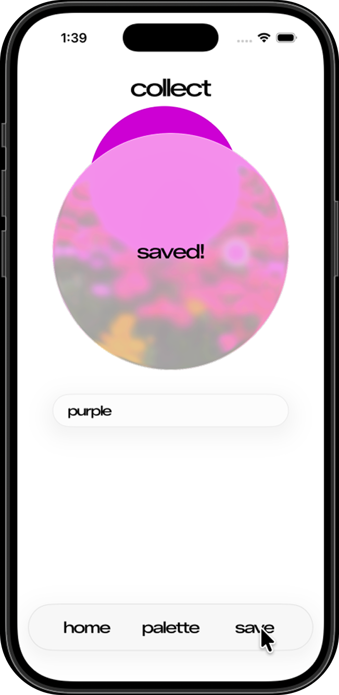
8. Reflection
Translating a Figma UI into a product exactly as designed took far more time and effort than I expected.
I couldn't say for certain, from this project alone, whether that was a prompting issue or whether the model I used (Claude Code, Sonnet 4.6) simply wasn't well-suited to the task. Using Fable might have let me catch and resolve errors earlier — but since it burns through credits much faster, I held off on using it for this project.
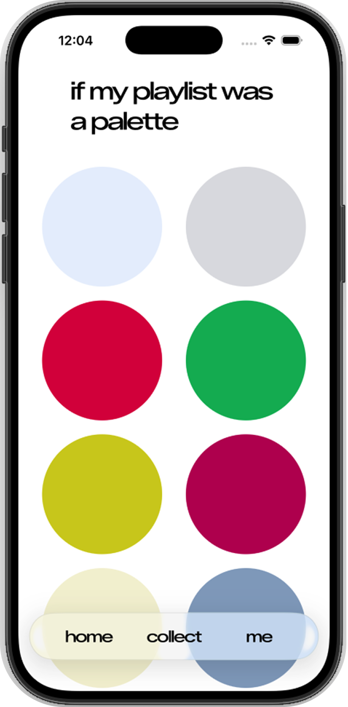
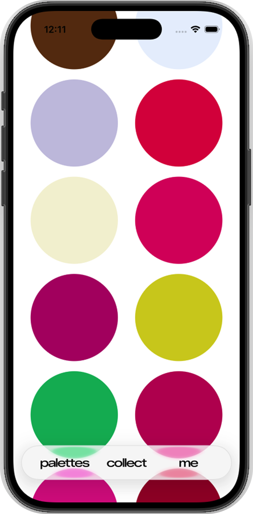